Residential Environments 176 production files · 18 with thumbnails. Tier: A animated · B rigged · C static · D unsupported. LOCAL RENDER = actual model rendered with three.js; OFFICIAL = creator image.
Human Characters Supernatural Characters Animals Residential Environments Urban & Public Environments Natural Environments Horror Environments Vehicles Props and Accessories Animation Libraries Index KN-SUBURB — City Kit (Suburban) 2.0 (40) Kenney (kenney.nl) · CC0 1.0 Universal (Public Domain Dedication) · Kenney stylized low-poly; shared colormap atlas
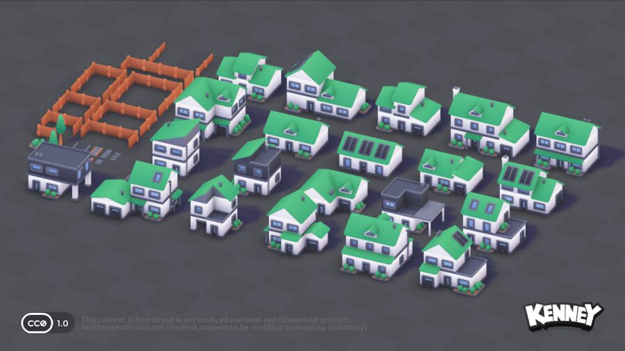
OFFICIAL PREVIEW
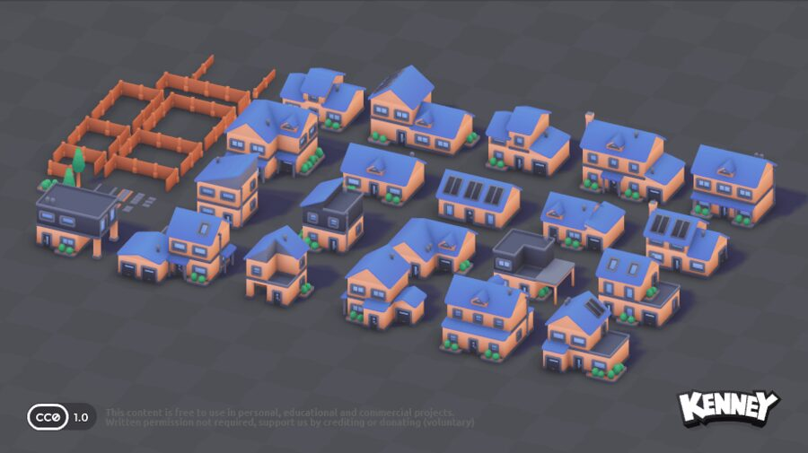
OFFICIAL PREVIEW
building-type-a
AG-KN-SUBURB-0001
KN-SUBURB · GLB C
LOCAL RENDER
building-type-g
AG-KN-SUBURB-0007
KN-SUBURB · GLB C
LOCAL RENDER
building-type-m
AG-KN-SUBURB-0013
KN-SUBURB · GLB C
LOCAL RENDER
building-type-s
AG-KN-SUBURB-0019
KN-SUBURB · GLB C
LOCAL RENDER
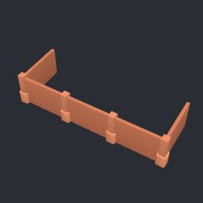
fence-1x3
AG-KN-SUBURB-0025
KN-SUBURB · GLB C
LOCAL RENDER
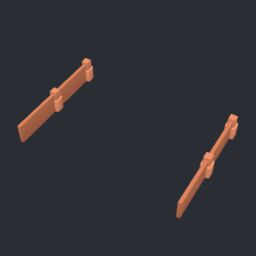
fence-low
AG-KN-SUBURB-0031
KN-SUBURB · GLB C
LOCAL RENDER
34 more files (no thumbnail) AG-KN-SUBURB-0002 · building-type-b · glb · C
QT-FARMBLD — Farm Buildings (13) Quaternius · CC0 1.0 Universal (Public Domain Dedication) · Quaternius stylized low-poly
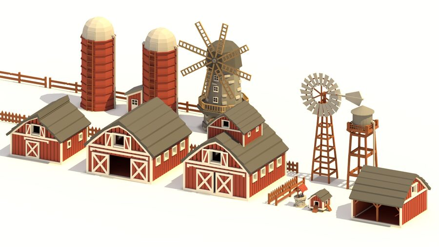
OFFICIAL PREVIEW
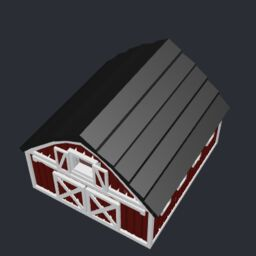
Barn
AG-QT-FARMBLD-0001
QT-FARMBLD · FBX C
LOCAL RENDER
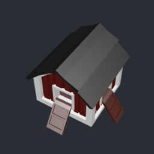
ChickenCoop
AG-QT-FARMBLD-0003
QT-FARMBLD · FBX C
LOCAL RENDER
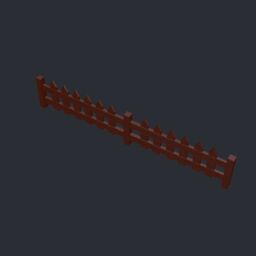
Fence2
AG-QT-FARMBLD-0005
QT-FARMBLD · FBX C
LOCAL RENDER
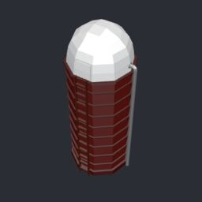
Silo
AG-QT-FARMBLD-0007
QT-FARMBLD · FBX C
LOCAL RENDER
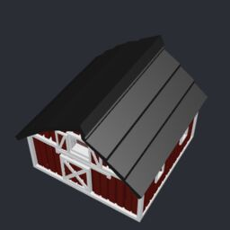
SmallBarn
AG-QT-FARMBLD-0009
QT-FARMBLD · FBX C
LOCAL RENDER
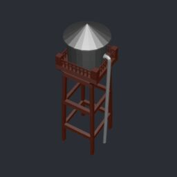
WaterTower
AG-QT-FARMBLD-0011
QT-FARMBLD · FBX C
LOCAL RENDER
7 more files (no thumbnail) AG-QT-FARMBLD-0002 · BigBarn · fbx · C
QT-HOUSEINT — Ultimate House Interior Pack (Jun 2020) (123) Quaternius · CC0 1.0 Universal (Public Domain Dedication) · Quaternius stylized low-poly
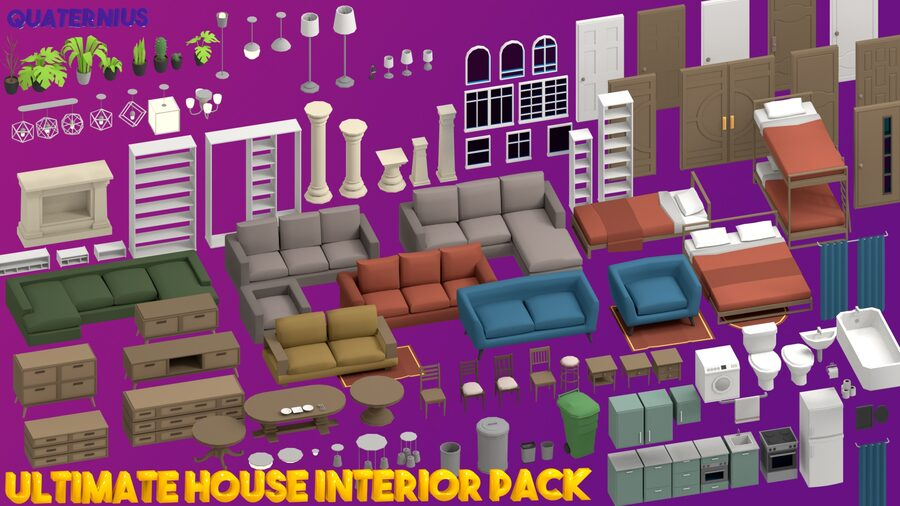
OFFICIAL PREVIEW
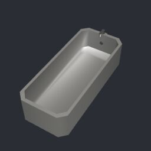
Bathroom_Bathtub
AG-QT-HOUSEINT-0001
QT-HOUSEINT · FBX C
LOCAL RENDER
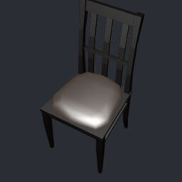
Chair_3
AG-QT-HOUSEINT-0021
QT-HOUSEINT · FBX C
LOCAL RENDER
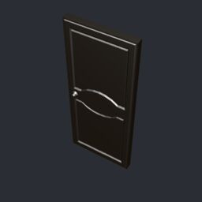
Door_4
AG-QT-HOUSEINT-0041
QT-HOUSEINT · FBX C
LOCAL RENDER
Houseplant_7
AG-QT-HOUSEINT-0061
QT-HOUSEINT · FBX C
LOCAL RENDER
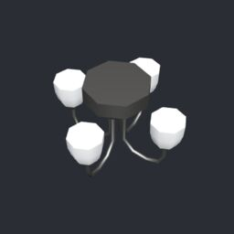
Light_Chandelier
AG-QT-HOUSEINT-0081
QT-HOUSEINT · FBX C
LOCAL RENDER
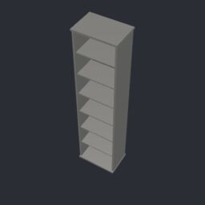
Shelf_2
AG-QT-HOUSEINT-0101
QT-HOUSEINT · FBX C
LOCAL RENDER
117 more files (no thumbnail) AG-QT-HOUSEINT-0002 · Bathroom_Mirror1 · fbx · C